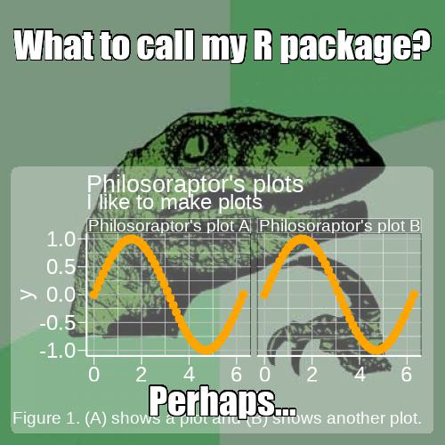

The memery package is used for generating internet memes suited specifically to data analysts, combining the visual impact of an attention-grabbing meme with graphic results of data analysis. This vignette covers the basic usage of memery with several examples.
Shiny example
Before getting to the code and other details, you can explore a quick visual example using the Shiny app packaged with memery. It displays an input meme background image and an inset plot which are combined to form the analyst’s meme. The app makes available any ggplot objects in the global environment created by the user to be used as inset plots for memes. If none exist, memeApp will generate a test plot ggplot object, memery_testplot, for the app session. Available plots populate the inset plot selection menu.
magick suggested but not required
If the magick package is installed, memeApp will launch in complete mode and the default image will be an animated gif. If not installed, a simplified version of the example app will launch, and only jpg and png files can be used. It is only listed as a suggested package. Any package functionality that uses the magick package returns gracefully with a notification about the missing package. The only function in memery that uses magick is meme_gif.
The meme
Now onto the core of the package. This consists of the background image and overlying text label(s). The image can be provided as a path to a local file or a URL. Below are examples of each, mixing up combinations of source file and output file format. memery also provides the classic meme font, Impact, as the default as well as the text shadow outline effect, which is available for any font you use.
Note on fonts
Note that Impact is a Windows font. If using memery on Linux for example, you would have to first install the font if not already installed on the system. If Impact or any other font family passed to meme, e.g. family = "Consolas", is not installed on an operating system, meme will ignore it and fall back on family = "serif" internally. If unfamiliar, explore the documentation and examples available for the showtext and sysfonts packages, which memery leverages.
loc <- system.file("philosoraptor.jpg", package = "memery")
web <- "https://imgflip.com/s/meme/Philosoraptor.jpg"
lab <- c("What to call my R package?", "Perhaps...")
meme(loc, lab[1], "meme1.jpg")
meme(web, lab[1], "meme1.png")

There is sensible default label placement. If label is a vector of length two, meme will make a symmetrical top and bottom title/subtitle pair of text labels.

This is done using the default lab_pos argument, which calls text_position. This convenience function is only useful for one or two text labels. meme allows you to place an arbitrary number of labels on the plot with arbitrary positioning by passing your own list to lab_pos where each list element is the same length as label. You can see what to do by looking at the output of text_position.
text_position(n = 2)
#> $w
#> [1] 0.9 0.9
#>
#> $h
#> [1] 0.3 0.3
#>
#> $x
#> [1] 0.5 0.5
#>
#> $y
#> [1] 0.9 0.1The label and shadow color can be controlled by col and shadow.
The arguments width and height do not need to be provided. If missing, they are inferred from the dimensions of img. However, providing width and height overrides the source file dimension. This is useful for large source images. Whether or not width or height are provided, mult can also be used as an image dimensions multiplier. See below for details.
Font size and image size
While the default size is set to 1, this is rather arbitrary. There is really no perfect default because the ideal size depends on several factors including the text string length, font family, and the output file dimensions, as well as subjective taste such as how much of the image width should the text cover, whether it will display with insufficient or excessive height, or whether it will block the view of important areas of the meme image. It makes sense to explicitly supply size for every meme. Note that, all else being equal, in general if you use an image scaled to, say, twice the width and height of another, doubling size will retain proportional label width coverage, but then height coverage will change. Text may also display slightly differently in png vs. jpg output files.
Avoid using mult to increase your image size as it will expand the shadow effect. Use a larger source image instead. mult is best for multipliers less than one, used to shrink an image. For example, a picture taken with your phone may have dimensions well in excess of what you need for a meme and it will be more efficient to produce a smaller output file. width and height are useful when you need to change the canvas size. These will not alter the aspect ratio. These will all affect the displayed label size in so much as it relates to the image dimensions.
Optional plot overlay
In addition to drawing text labels on top of the background image, meme offers the ability to overlay an inset plot, a plot within the meme plot. This could be a thumbnail inset appearing in a corner of the plot. For example, it could be a logo. But generally speaking, this kind of behavior is directly accessible using the grid framework and memery does not attempt to duplicate this generality. Instead, it expects the inset argument to be any ggplot object; `inset is not for reading in a second image file. It is meant to be a plot.
By default, a ggplot object passed to meme via inset will take up approximately the lower two thirds of the plot and the full with, accounting for some margin space. It has a semi-transparent background so that it does not completely obscure the meme background image. These settings, background color, transparency, size and position, can all be specified in the call to meme as the following examples demonstrate.
library(ggplot2)
x <- seq(0, 2*pi , length.out = 50)
panels <- rep(paste("Philosoraptor's plot", c("A", "B")), each = 50)
d <- data.frame(x = x, y = sin(x), grp = panels)
txt <- c("Philosoraptor's plots", "I like to make plots", "Figure 1. (A) shows a plot and (B) shows another plot.")
p <- ggplot(d, aes(x, y)) + geom_line(colour = "cornflowerblue", size = 2) +
geom_point(colour = "orange", size = 4) + facet_wrap(~grp) +
labs(title = txt[1], subtitle = txt[2], caption = txt[3])
meme(loc, lab, "meme4a.jpg", inset = p)
Note the default semi-transparent background that allows the meme image to show through when the inset has a large coverage area. The style includes rounded corners. This is from the grid package. It is a rectangle layer in the same viewport as p; it is not part of the ggplot theme. The latter is separate and can be controlled by passing your own theme to ggtheme or setting this to NULL, which falls back on whatever theme is set for your plot p. The default theme for meme plots comes from memetheme. Naturally, the theme will need to be customized for many meme plots because underlying meme images are arbitrary.
Alternate inset templates
The graph overlay does not fit well, namely the annotations. This will be adjusted in a moment. First, a quick look at other position templates. An opaque background for the inset is more suitable for a thumbnail image that does not get in the way of the meme. The following example shows a bottom left corner inset graphic. An empty theme is used since there is no room in the inset for plot annotations.
p2 <- ggplot(data.frame(x = rnorm(10000)), aes(x)) +
geom_density(adjust = 2, colour = "white", size = 1)
pos <- list(w = 0.2, h = 0.2, x = 0.125, y = 0.125)
meme(loc, lab[1], "meme4b.jpg", inset = p2, inset_bg = list(fill = "dodgerblue", col = "black"), inset_pos = pos, ggtheme = theme_void())

Above, the size and position was specified explicitly with pos. However, the same could be done using inset_position(type = "bl"). The available position templates include the four corners via tl, tr, br and bl for top right, top left, bottom left and bottom right, respectively. There is also a center thumbnail option. inset_position also takes size and margin arguments to further specify the thumbnail placement.
pos <- inset_position("bl", size = c(0.4, 0.2), margin = c(0.025, 0.05))
meme(loc, lab[1], "meme4b2.jpg", inset = p2, inset_bg = list(fill = "firebrick1", col = "white"), inset_pos = pos, ggtheme = theme_void())

There are also four full quadrant templates. These are special cases of the corner thumbnails. They are specified by appending the letter q to the end of a corner template ID: tlq, trq, brq, and blq. The size argument is not applicable since these are fixed, full quadrant plots, but these templates still allow for margin control.
Improved fit
Returning to the more complex graph, the philosoraptor image is a bit small for the first detailed plot shown above where the annotations go off the image. For convenience, it is enlarged below by simply using mult = 2 when including the full graph again. For now, drop the second text label. It will be relocated later.

Below is an example where the background panel is set to another semi-transparent color and the border color is no longer transparent.
vp_bg <- list(fill = "#FF00FF50", col = "#FFFFFF80")
meme(loc, lab[1], "meme4d.jpg", size = 2, inset = p, inset_bg = vp_bg, mult = 2)
You can also increase the radius of the rounded corners, with, e.g.
Setting to zero will remove the rounding.
Multiple labels and vector arguments
As shown, more than one text label can be drawn on the meme plot and assigned a different position. Other arguments are correspondingly vectorized. Each label can have unique text size, font family, font color, shadow color, and position arguments. Whereas the length of elements in label_pos must match the length of label, these other arguments are recycled if not as long as label.
lab[2:3] <- c("Perhaps raptr... NO!!!", "Pfft. Figures.")
lab_pos <- list(w = rep(0.9, 3), h = rep(0.3, 3), x = rep(0.5, 3), y = c(0.95, 0.85, 0.3))
meme(loc, lab, "meme5.jpg", size = c(1.25, 2.5, 1), family = c("serif", "Impact", "Impact"), col = clrs, shadow = rev(clrs), label_pos = lab_pos, inset = p, mult = 2)

Animated gifs
If ImageMagick is installed on your system, animated gifs can be used for data analyst memes.
d$grp <- gsub("Philosoraptor's", "Cat's", d$grp)
p <- ggplot(d, aes(x, y)) + geom_line(colour = "white", size = 2) +
geom_point(colour = "orange", size = 1) + facet_wrap(~grp) +
labs(title = "The wiggles", subtitle = "Plots for cats",
caption = "Figure 1. Gimme sine waves.")
lab <- c("R plots for cats", "Sine wave sine wave...")
pos <- list(w = rep(0.9, 2), h = rep(0.3, 2), x = rep(0.5, 2), y = c(0.9, 0.75))
img <- "http://forgifs.com/gallery/d/228621-4/Cat-wiggles.gif"
meme_gif(img, lab, "sine.gif", size = c(1.5, 0.75), label_pos = pos,
inset = p, inset_bg = list(fill = "#00BFFF80"), fps = 20)The generated file will look like this: